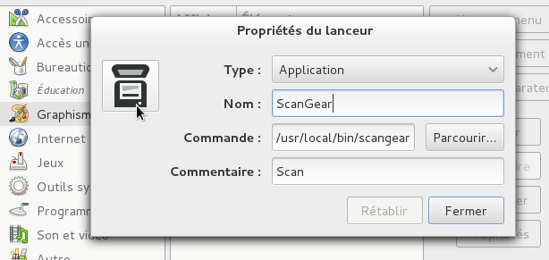

How to set up Canon MG3250 printer on Linux
I recently bought a Canon MG3250 printer, this is a classic printer with a good quality price average for home usage (wifi, recto-verso, scan).

Prerequisites
So, you have to make the installation of your printer (follow the canon manual), connect to your wifi network with WPS (Wifi Protected Setup)
/!\ Note : if your router doesn't support WPS functionnality, you have to setup your printer with the installation cd on windows or MacOS.
System installation
- On Fedora, there is tree solutions to configure your printer :
- simply connect through the usb cable, and that's it ! the printer is now added and also works through wifi
- through wifi, you have to launch system-config-printer in your terminal and add the printer
- open http://localhost:631/ (it's the web interface for CUPS) into a browser window and configure your printer from there.
- Maybe on other distro you have to download and install canon drivers to add and configure the printer :
- download the IJ printer driver here (deb/rpm or source)
- decompress with tar -xvf
- in the decompressed folder, install with sh install.sh (with root rights) and follow the instructions
- Everything works well, except the scan function, if you want to use this functionnality, you need scangear :
- download scangear
- decompress with tar -xvf
- in the decompressed folder, install with sh install.sh (with root rights)
Now you can launch scangear (scangearmp command) and launch a scan through wifi.
To add a scangear icon on your gnome shell menu, you should install alacarte (if you're on Fedora, there is a fix to run Alacarte : just read my ToTW ) which provide a complete and simple menu editor for gnome. Here is my conf for the new entry (the emplacement of scangearmp is : /usr/local/bin/scangearmp ,simply show that with which scangearmp command) :
Note : don't forget to change icon by clicking on the little launcher on the left, you can find a fancy scan icon under gnome/scalable/devices
Comments